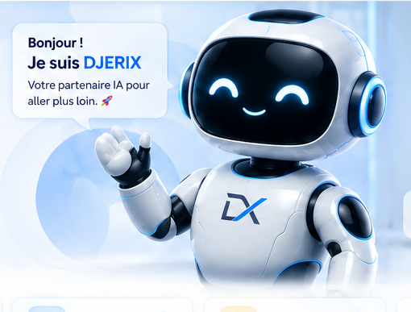

Yann Christol Dje
Fondateur · DJERIX Technologies
- 💻 Informaticien & entrepreneur
- 🤖 Passionné par l’IA et l’innovation
- 🌍 Originaire de Côte d’Ivoire
- 🚀 Créateur de DJERIX
- 📚 Toujours en apprentissage
« Apprendre aujourd’hui.
Construire demain. »
Découvrez mon parcours, ma passion pour la technologie et la mission derrière DJERIX Technologies.
« L’intelligence artificielle n’est pas une fin en soi, mais un outil pour révéler le potentiel humain. »— Yann Christol Dje

Fondateur · DJERIX Technologies
« Apprendre aujourd’hui.
Construire demain. »
Je m’appelle Yann Christol Dje, passionné de technologie, d’intelligence artificielle et de solutions numériques. Je me forme, j’explore et je développe des projets qui cherchent à produire un impact concret.
DJERIX Technologies est né de ma volonté de rendre la technologie plus accessible, utile et pratique pour les étudiants, professionnels, entrepreneurs et créateurs.
Je crois en une technologie qui simplifie la vie, aide à apprendre, créer et accomplir plus, sans complexité inutile.
Créer des solutions qui apportent une réelle valeur aux utilisateurs.
Toujours apprendre, explorer et repousser les limites.
Rendre les technologies avancées simples et accessibles à tous.
Offrir des outils fiables, sécurisés et transparents.
Des idées, des projets, des collaborations ? Je suis toujours ouvert aux échanges.